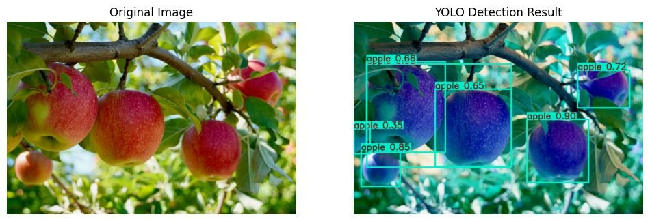
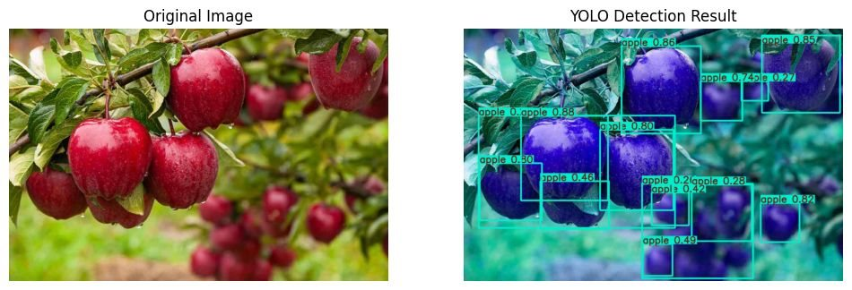

Apple detection for yield estimation
Fine-tuning YOLO to find and count apples in dense orchard images: a YOLOv8 experiment on a combined dataset, then a cleaner YOLO11s run that's exported to ONNX and deployed.
Sowmiya Jeromiah · Robotics Software Engineer

What the detector sees


Interactive: how detection metrics work
Two experiments, one deployed model
A combined dataset for diversity: MinneApple + Kaggle + custom Roboflow labels. MinneApple masks converted to boxes (findContours → boundingRect) and COCO JSON converted to YOLO. Batch 16, 640 px, 50 epochs.
A prior experiment, not deployed.
A single, consistent dataset: 2,208 train / 318 val images, one class. Batch 36, 640 px, 50 epochs, about 1.4 h on a Colab Tesla T4. Exported to best.onnx.
This is the model in the inference script, with a complete, trustworthy log.
Transfer learning, made concrete
493 / 499 layer groups from COCO-pretrained yolo11s. Only the head is re-initialised (nc 80 → 1).
optimizer=auto: Ultralytics picked AdamW, lr 0.002. Not hand-tuned, and I say so.
Default recipe. Mosaic is switched off for the last 10 epochs, so fine-tuning sees realistic single images.
A training anomaly I can explain
Epoch 1 took about 18 min; epochs 2–50 took 65–75 s. The most likely cause is the dataset on Google Drive: the first epoch faults every image in over the network, and later epochs hit a warm cache.
A believable result profile
Recall < precision
It misses apples more often than it imagines them, which is consistent with occlusion, the known hard problem in orchard data.
The 50 vs 50–95 gap
It finds apples well, but boxing round, overlapping fruit pixel-tight is hard.
Deployment
ONNX on CPU, conf = 0.5. Lower for yield counting, higher for picking.
Limits, and what's next
Known rough edges
- Example detections come from the validation split, not a blind test set
!cp runs …lacked-rand couldn't copy the folder. The zip + download after it is what worked- The deploy script is a single-image, GUI-based smoke test, not a service
- Metrics read from the console table: should use
metrics.box.map50
Next
- A genuinely separate test set before claiming generalisation
- More dense-cluster labels to close the recall gap
- Batch, video or headless inference
- (ideas) tracking across frames to count each apple once, and depth for 3D picking positions